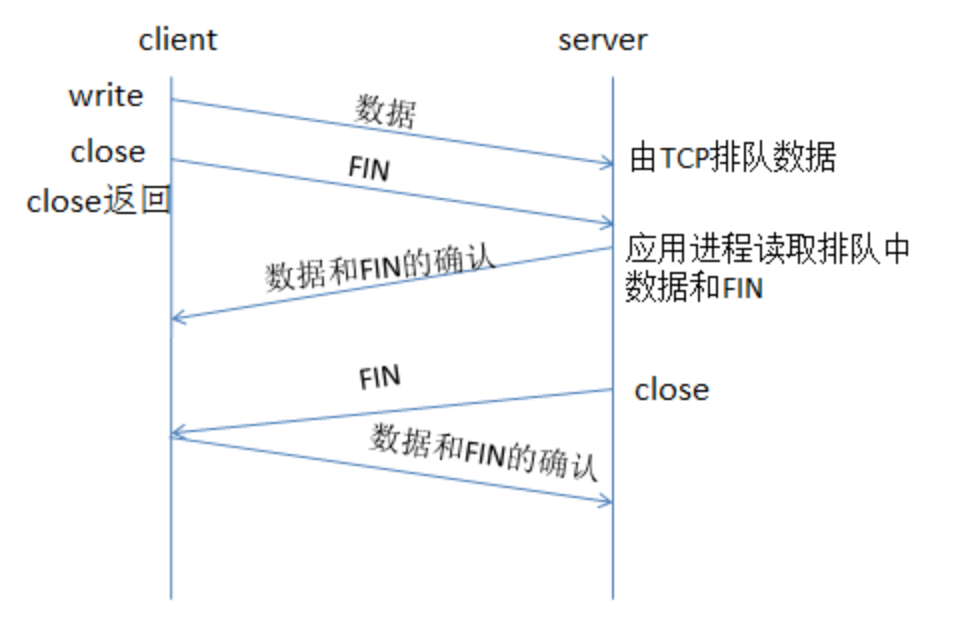
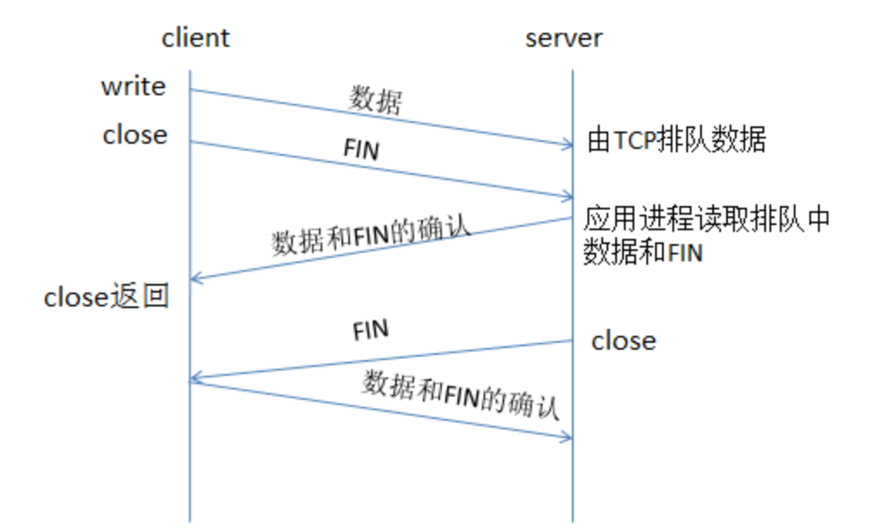
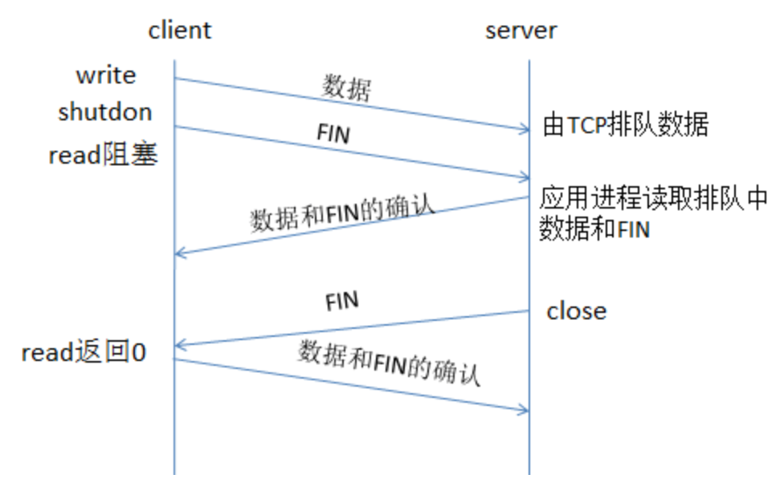

在阅读别人的代码时，网络部分经常会遇到setopt函数，下面关于几个生疏的选项作简要总结。
关于套接字选项的设置与获取的两个函数为：setsockopt、 getsockopt。涉及的套接字选项较多，以下结合笔者所认为较为重要的几个，做简要描述（内容摘录自《UNNIX网络编程》卷1 Ch7 套接字选项）。
SO_ERROR套接字选项
当一个套接字上发生错误时，源自Berkeley的内核中的协议模块将该套接字名为so_error的变量设置为标准的Unix Exxx值中的一个，称之为该套接字的待处理错误（pending error）。内核能够以以下两种方式之一立即通知进程这个错误。
- 如果进程阻塞在对该套接字的select调用上，那么无论是检查可读还是可写条件，select均返回并设置其中一个或所有两条条件。
- 如果进程使用信号驱动式I/O模型，那就给进程或进程组产生一个SIGIO信号。
进程然后可以通过访问SO_ERROR套接字选项获取so_error的值。so_error随后由内核复位为0（错误处理的例子可以参照 《非阻塞connect》）。 当进程调用read且没有数据返回时，如果so_error为非0值，那么read返回-1，且errno被置为so_error的值。so_error随后由内核复位为0。 如果该套接字上有数据在排队等待读取，那么read返回那些数据而不是返回错误条件。 如果在进程调用write时so_error为非零值，那么write返回一个-1且errno被设置为so_error的值。so_error随后由内核复位为0。
SO_KEEPALIVE套接字选项
给一个TCP套接字设置保持存活（keep-alive）选项后，如果2小时内在该套接字的任意方向上都没有数据的交互，TCP会自动给对端发送一个保持存活探测包（keep-alive probe）。这是一个对端必须响应的TCP包，它会导致以下三种情况之一：
- 对端以期望的ACK响应。应用进程得不到通知(一切正常)，在又经过仍无动静的2小时后，TCP将发出另一个保持存活探测包。
- 对端以RST响应，它告知本端TCP:对端已经崩溃且已经重启。该套接字的待处理错误被置为ECONNRESET，套接字本身则被关闭。
- 对端对保持存活探测包没有任何响应。源自Berkeley的TCP将另外发送8个保持存活探测包，两两相隔75秒，试图得到一个回应，如果还没有回应，则放弃。
SO_LINGER套接字选项
本选项执行close函数对于面向连接的协议如何进行操作的。
服务器TCP不同条件检测
情形1： 客户端TCP正主动发送数据
- 服务器进程崩溃: 服务器TCP发送一个FIN，客户端通过使用select判断可读条件立即能检测出来。如果客户端再发送另一个数据包，服务器TCP就以RST响应。如果在客户端TCP收到RST后应用进程仍然试图写套接字，则客户端的套接字就给该进程发送一个SIGPIPE信号。
- 服务器主机崩溃: 客户端TCP将超时，且套接字的待处理错误被置为ETIMEDOUT。
- 服务器主机不可达: 客户端TCP将超时，且套接字的待处理错误被置为EHOSTUNREACH。
情形2： 客户端TCP正主动接收数据
- 服务器进程崩溃: 服务器TCP将发送一个FIN，我们将把它作为一个EOF读入（可能较早读入）。
- 服务器主机崩溃: 客户端将停止数据接收。
- 服务器主机不可达: 客户端将停止数据接收。
情形3： 连接空闲，保持存活选项已设置
- 服务器进程崩溃: 服务器TCP发送一个FIN，客户端通过使用select判断可读条件立即能检测出来。
- 服务器主机崩溃: 在毫无动静2小时后，发送9个保持存活探测数据包，然后套接字的待处理错误被设置为ETIMEDOUT。
- 服务器主机不可达: 在毫无动静2小时后，发送9个保持存活探测数据包，然后套接字的待处理错误被设置为EHOSTUNREACH。
情形4： 连接空闲，保持存活选项未设置
- 服务器进程崩溃: 服务器TCP发送一个FIN，客户端通过使用select判断可读条件立即能检测出来。
- 服务器主机崩溃: 无
- 服务器主机不可达： 无
注：以上的客户端、服务器可互换，条件检测类似
SO_LINGER选项介绍
SO_LINGER套接字选项使得我们可以改变close的默认设置。本选项要求在用户进程与内核间传递如下结构：
struct linger
{
int l_onoff; /*0-关闭 1-打开*/
int l_linger; /*停留时间（posix单位为秒）*/
}
对setsockopt的调用将根据其中两个结构成员的值形成下列三种情形之一： * 如果l_onoff为 0，那么关闭本选项。l_linger的值被忽略，TCP的默认设置生效，即close立即返回。 * 如果l_onoff为非0且l_linger为0，那么当close某个连接时TCP将中止该连接（TCP将丢弃保留在套接字发送缓冲区中的任何数据，并发送一个RST给对端，而没有通常的关闭时的四次握手，这样能够避免TCP的TIME_WAIT状态(这样有可能导致”已失效的报文段”被不正确的传到新的连接上)。 * 如果l_onoff为非0且l_linger为非0值 ，那么当套接字关闭时内核将拖延一段时间（如果在套接字发送缓冲区中仍然留有数据，那么进程将投入睡眠，直到所有数据都发送完成且均被对方确认或者延迟事件到），如果套接字设置为非阻塞，那么它将不等待close完成，即使延迟时间为非0值。 当使用SO_LINGER选项的这个特性时，应用进程检查close的返回值是非常重要的，因为如果在数据发送完并被确认前延迟时间到的话，close将返回EWOULDBLOCK错误，且套接字发送缓冲区中的任何残留数据都将被丢弃。
shutdown函数
终止网络连接的通常方法是调用close函数。不过close有两个限制，却可以使用shutdown来避免。 * close把描述符的引用计数减1，仅在该计数变成0时才关闭套接字。 使用shutdown则可以不管应用计数就激发TCP的正常连接终止序列。 * close终止读和写两个方向的数据传送。既然TCP是全双工的，有时候我们需要告诉对端我们已经完成了数据传送。既使对端仍然有数据要发送给我们。
int shutdown(int sockfd, int howto)
该函数的行为依赖于howto参数的值：
- SHUT_RD: 关闭连接的读这一半——套接字中不再有数据可接收，而且套接字接收缓冲区中的现有数据将被全部丢弃。进程不再对这样的套接字调用任何读函数。对一个TCP套接字这样调用shutdown函数后，由该套接字接收的来自对端的任何数据都被确认，然后悄然丢弃。 SHUT_WR: 关闭连接的写这一半——对于TCP套接字，这称之为半关闭，当前留在套接字发送缓冲区中的数据将被发送掉，后跟TCP的正常终止序列。进程不再对这样的套接字调用任何写函数。
- SHUT_RDWR: 连接的读半部分和写半部分都关闭——这与调用shutdown两次等效；第一次调用指定SHUT_RD, 第二次调用指定SHUT_WR。
不同情形的close返回
- close默认操作
默认的操作是close后立即返回，但是如果有数据残留在套接字发送缓冲区中，系统将试着把这些数据发送给对端。 
客户端的close可以在服务器读取套接字接收缓冲区中的剩余数据之前就返回。如果在服务器的应用进程读取这些剩余数据之前就崩溃，客户端进程就永远不会知道（客户端一直处于FINWAIT_1状态）。
- SO_LINGER指定延时时间
客户端可以设置SO_LINGER套接字选项，指定一个正的延时时间。这种情况下客户端的close要到它的数据和FIN已被服务器主机的TCP确认后才返回（延时时间为一个较大的值）。
然而，仍然会与close的默认操作存在同样的问题：在服务器应用进程读取剩余数据之前，服务器主机有可能崩溃，并且服务器应用进程永远不知道（如果SO_LINGER选项的值偏小，close仍然有可能在它的数据和FIN被服务器主机的TCP确认之前就返回，并且返回值为-1，errno为EWOULDBLOCK）。 
基本原则：设置SO_LINGER套接字选项后，close的唱功返回只是告诉我们先前发送的数据和FIN已经由对端TCP确认，而不能告诉我们对端的一样进成功已经读取了数据。
- shutdown关闭方式 让客户知道服务器已经读取其数据的一个方法是改为shutdown（并设置它的第二个参数为SHUT_WR）而不是调用close，并等待服务器的close调用。 
比较这几种方式，可以在一下3个不同时机返回:
- close立即返回，根本不等待。
- close一直拖延到接收了对于客户端FIN的ACK才返回。
- 后跟一个read调用的shutdown一直等到接收了服务器端的FIN才返回。
参考阅读
《UNNIX网络编程》卷1 Ch7 套接字选项